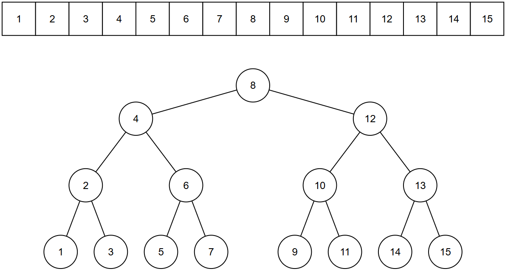

二叉搜索树
定义
二叉搜索树满足定义：
（即：任意节点左子树的所有节点值 < 该节点值 < 右子树的所有节点值；空树自动满足条件）
平衡树要求树的节点满足一种均衡关系（目的是使 \(h ≈ \log n\)），确保树不会退化。AVL 树对平衡性的定义是：对于树的每一个节点，满足左右子树的高度差不超过 1
性质
二叉搜索树任意节点左子树的所有节点值 < 该节点值 < 右子树的所有节点值，因此如果中序遍历二叉搜索树，得到的序列是单调递增的
一种理想的二叉搜索树构造，二叉树的中序遍历序列如数组所示

同时根据上面的图你会发现，对升序数组中的某个数字的二分查找过程，就是对相应的二叉搜索树自顶向下搜索的过程。二叉搜索树将搜索过程具象化了
建立
节点定义
在基础的二叉树基础上，选择性的加上一些维护信息，方便一些基于 BST 的操作
| struct treeNode{
int val;
int size; // 以当前节点为根的子树的大小
int count; // 当前节点 val 的重复数量（针对于可重 BST）
treeNode *leftChild, *rightChild;
treeNode ()
{ val = 0; size = 1; count = 1; leftChild = nullptr; rightChild = nullptr; }
treeNode (int x, treeNode *l = nullptr, treeNode *r = nullptr)
{ val = x; size = 1; count = 1; leftChild = l; rightChild = r; }
};
|
非动态建树
我们先从一个特例开始：对一个有序数组建立二叉搜索树
正如前面的图像所描述，我们像二分查找那样，二分建树即可：
1
2
3
4
5
6
7
8
9
10
11
12
13 | treeNode* createBST(const vector<int>& nums, int left, int right) {
if (left > right) {
return nullptr;
}
int mid = left + (right - left) / 2;
treeNode* root = new treeNode(nums[mid]);
root->leftChild = createBST(nums, left, mid - 1);
root->rightChild = createBST(nums, mid + 1, right);
return root;
}
|
这样的建树方式非常直观，并且由于二分建树的特性，这棵树同时也是平衡树
假如给定的数组是无序的，我们经过一次排序操作，然后二分建树，时间复杂度 \(O(n\log n)\)，建成的树还是平衡树，效率也很高
但是如果我们需要动态建树（插入/删除单个顶点），仅靠上面的操作是完全不够的
动态建树
插入一个元素
我们希望动态插入节点的过程不至于每次都大幅度修改原来的 BST 树，因此我们将新的节点统一插入为树的叶节点，不修改已建立的二叉树，采用和二分建树相似的逻辑：
1
2
3
4
5
6
7
8
9
10
11
12
13
14
15
16
17
18
19
20
21
22
23
24
25
26 | // updateSize() 函数之后将多次用到，因此我们独立出该函数，象征性用 inline
inline void updateSize(treeNode* root){
// size = 左子树 size + 右子树 size + count
if (root) root->size = (root->leftChild ? root->leftChild->size : 0) +
(root->rightChild ? root->rightChild->size : 0) +
(root->count);
}
treeNode* insertBST(treeNode* root, int key) {
if (root == nullptr) {
return new treeNode(key);
}
if (key < root->val) {
root->leftChild = insertBST(root->leftChild, key);
} else if (key > root->val) {
root->rightChild = insertBST(root->rightChild, key);
} else {
root->count++; // 针对可重集，记录重复出现次数
}
// 更新节点大小
updateSize(root);
return root;
}
|
其时间复杂度为 \(O(h)\)，根据树的实际构造情况在 \(O(\log n) \sim O(n)\) 浮动
删除一个元素
删除一个元素需要考虑的内容多一些：
1- 如果待删除的元素是叶节点，那么直接删除即可
2- 如果待删除的节点只存在单侧子树，那么我们要用这个子树的根节点去代替待删除节点
3- 如果待删除的节点同时存在左右子树，那么我们需要用合适的节点去代替待删除节点，根据中序遍历的结果，选择待删除节点左右相邻的节点之一进行位置的替代，这样能保持 BST 的性质
下面的函数中，返回值是用于替代被删除位置的节点的指针，可能是 nullptr，也可能是用于位置替代的节点指针
1
2
3
4
5
6
7
8
9
10
11
12
13
14
15
16
17
18
19
20
21
22
23
24
25
26
27
28
29
30
31
32
33
34
35
36
37
38
39
40
41
42
43
44
45
46
47
48
49
50
51
52 | treeNode* deleteBST(treeNode* root, int key) {
if (root == nullptr) {
return nullptr;
}
// 先递归找到节点
if (key < root->val) {
root->leftChild = deleteBST(root->leftChild, key);
} else if (key > root->val) {
root->rightChild = deleteBST(root->rightChild, key);
} else if (root->count > 1){ // 节点的重复次数大于 1
root->count--;
}
// 需要实际删除该节点
else {
// 有 0/1 个子节点
if (root->leftChild == nullptr) {
treeNode* temp = root->rightChild;
delete root;
return temp;
}
if (root->rightChild == nullptr) {
treeNode* temp = root->leftChild;
delete root;
return temp;
}
// 有两个子节点
else {
// 以找右子树的最小节点（中序后继）为例
treeNode* minNode = root->rightChild;
// 找最小节点
while (minNode->leftChild != nullptr) {
minNode = minNode->leftChild;
}
// 用最小节点的 val 与 count 替换当前节点的 val 与 count
root->val = minNode->val;
root->count = minNode->count;
// 设置 minNode->count = 1 是因为它将要被删掉了
// 递归删除方便更新 count 等信息
minNode->count = 1;
root->rightChild = deleteBST(root->rightChild, minNode->val);
}
}
// 更新节点大小
updateSize(root);
return root;
}
|
其时间复杂度为 \(O(h)\)，根据树的实际构造情况在 \(O(\log n) \sim O(n)\) 浮动
查询操作
查询指定元素位置
其操作在删除操作中已经体现，这里给出非递归版本
1
2
3
4
5
6
7
8
9
10
11
12
13
14
15 | // 非递归查找，返回节点指针，未找到返回 nullptr
treeNode* search(treeNode* root, int key) {
treeNode* cur = root;
while (cur) {
if (key == cur->val) {
return cur;
} else if (key < cur->val) {
cur = cur->leftChild;
} else {
cur = cur->rightChild;
}
}
return nullptr;
}
|
查询指定元素的前驱/后继
自顶向下搜索，以查询前驱为例，如果节点值小于当前值，则当前值可能就是前驱，去更大的右子树中寻找可能的更大节点，否则前驱在其左子树中，去左子树。
1
2
3
4
5
6
7
8
9
10
11
12
13
14
15
16
17
18
19
20
21
22
23
24
25 | treeNode* getPre(treeNode* root, int key) {
treeNode* pre = nullptr;
while (root) {
if (key > root->val) {
pre = root;
root = root->rightChild;
} else {
root = root->leftChild;
}
}
return pre;
}
treeNode* getSuc(treeNode* root, int key) {
treeNode* suc = nullptr;
while (root) {
if (key < root->val) {
suc = root;
root = root->leftChild;
} else {
root = root->rightChild;
}
}
return suc;
}
|
查询指定元素的排名
取出 BST 对应的可重集的元素进行升序排序，对于在 BST 树上的待查询元素 key 返回小于 key 的元素个数然后加上 1（排名）；对于不在 BST 树上的 key 返回小于 key 的元素个数
向下搜索指定元素的过程中，如果向右子树搜索，答案累加当前节点的 size 和 count（左子树 + 当前节点元素个数）；如果向左子树搜素，不累加答案；找到指定元素时，答案累加当前节点的 size 再加 1（对于不在 BST 树上的 key 不会有这一步）
| int getRankFromKey(treeNode* root, int key) {
// 到达叶子节点
if (root == nullptr) return 1;
// 指定元素在左子树
if (root->val > key) return getRankFromKey(root->leftChild, key);
// 指定元素在右子树
if (root->val < key) return getRankFromKey(root->rightChild, key) + (root->leftChild ? root->leftChild->size : 0) + root->count;
// 找到了指定元素
return (root->leftChild ? root->leftChild->size : 0) + 1;
}
|
查询指定排名的元素
对左子树大小进行三分：
1- \(rank \leq leftSize\)，元素在左子树中
2- \(rank \in (leftSize, leftSize+count]\)，元素为当前节点
3- \(rank > leftSize+count\)，元素在右子树中
1
2
3
4
5
6
7
8
9
10
11
12
13
14
15
16
17
18
19
20
21
22
23 | int getKeyFromRank(treeNode* root, int rank) {
// 排名超限
if (root == nullptr) {
return -1;
}
// 计算左子树的节点数
int leftSize = root->leftChild ? root->leftChild->size : 0;
// 目标 rank 在左子树中
if (rank <= leftSize) {
return getKeyFromRank(root->leftChild, rank);
}
// 找到了 rank 对应的节点范围
else if (rank <= leftSize + root->count) {
return root->val;
}
// 目标 rank 在右子树中
else {
// rank 减去左子树 + 当前节点元素个数的偏移，也就是已经跳过的元素个数
return getKeyFromRank(root->rightChild, rank - (leftSize + root->count) );
}
}
|
{kind=link}